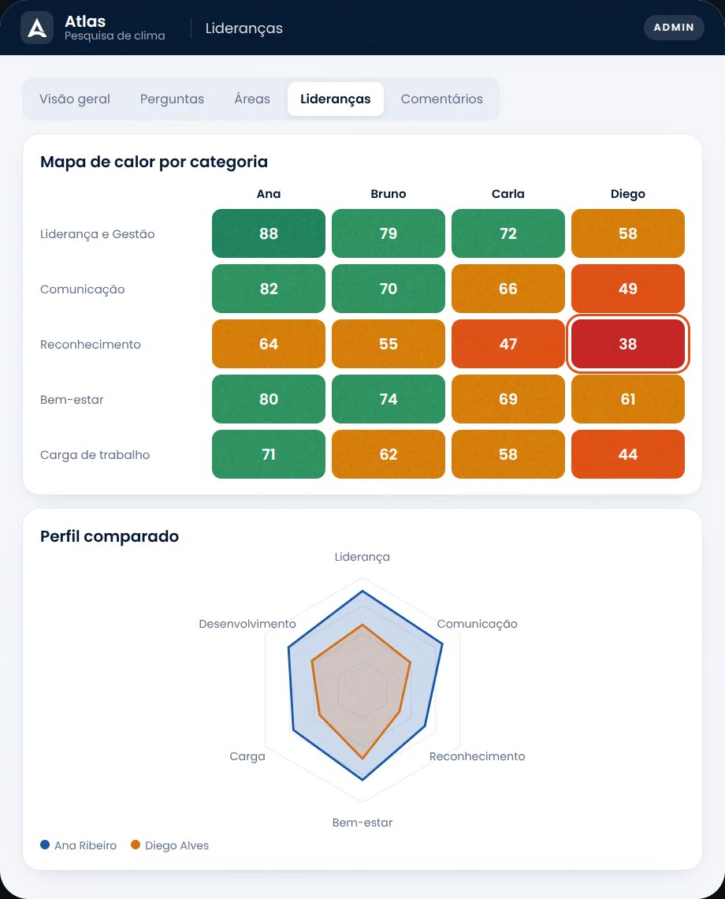
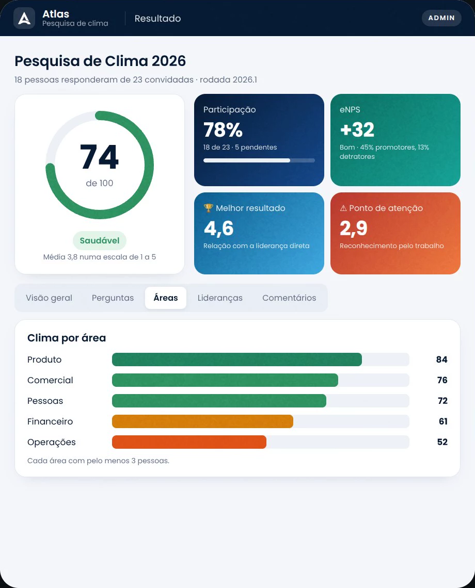

Atlas
Clima
um produto
Saúde mental e trabalho
Saúde mental no trabalho
Saúde mental passou o câncer.
Virou a maior preocupação de saúde do mundo.
E chega à sua empresa todo dia.
A maior preocupação de saúde do mundo
já não é o câncer.
Saúde mental
48%
Câncer
40%
Estresse
32%
Obesidade
25%
% que aponta cada tema entre os maiores problemas
de saúde do país · média de 32 países
Ipsos Health Service Report 2026 · 22.528 adultos, jul–ago/2026
No Brasil, apontam a saúde mental
como o maior problema de saúde
58%
Em 2018, eram 18%.
O câncer liderava, com 57%.
Média mundial: 48%
Ipsos Health Service Report 2018 e 2026 · mede a percepção, não a quantidade de casos
Ninguém deixa a cabeça no estacionamento.
O que pesa em casa sobe para a reunião das 8h. E o que pesa no trabalho volta para casa.
546 mil afastamentos.
Por transtornos mentais em 2025, no INSS.
16% a mais que em 2024. Recorde.
166 mil
por ansiedade
127 mil
por episódios depressivos
Previdência Social, dados de 2025 divulgados em jan/2026 (546.254; 472.328 em 2024) · contam afastamentos, não pessoas
O que o RH vê é só a ponta.
SUPERFÍCIE
O QUE CHEGA AO RH
PROFUNDIDADE
RISCOS PSICOSSOCIAIS
Afastamentos
Faltas
Pedidos de demissão
Excesso de demanda
Prazos impossíveis
Pouca autonomia
Papéis confusos
Assédio e conflitos
Liderança ausente
Riscos psicossociais: exemplos do Manual do capítulo 1.5 da NR-1 (MTE, mar/2026) e da ISO 45003
Desde 26 de maio de 2026, cuidar disso não é opcional.
É
NR-1
.
Os riscos psicossociais entraram no gerenciamento de riscos da empresa (GRO e PGR): identificar, avaliar, agir e acompanhar.
Portaria MTE nº 1.419/2024 · prazo da Portaria MTE nº 765/2025
Existem dois jeitos de cuidar da saúde mental no trabalho.
Uma palestra no
Setembro Amarelo.
Um indicador acompanhado
o ano todo.
Qual é o da
sua empresa?
Como medir,
na prática.
1
Escute todo mundo, com frequência
Pesquisas curtas e anônimas, não um questionário por ano.
2
Olhe por área e por liderança
A média da empresa esconde o time que está no limite.
3
Cruze com os sinais que já existem
Afastamentos, faltas, horas extras e pedidos de demissão.
4
Vire plano de ação e meça de novo
Com responsável e prazo, para ver se o risco caiu.
O Atlas Clima
mostra onde olhar.
Pesquisa de clima com respostas anônimas e
resultado por área e por liderança.


Saúde mental não é campanha.
É
indicador
.
Atlas Clima · um produto NEXA
Escuta o time, mostra onde agir e mede de novo para ver se melhorou.
Alimenta o seu PGR com a escuta das pessoas. Não substitui a avaliação técnica de saúde e segurança do trabalho.
Salve e mande para o RH
Link na bio ↗